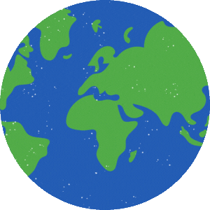
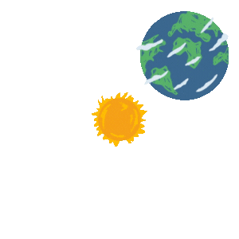
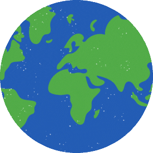
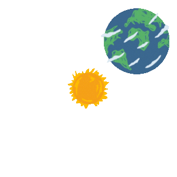

Earth is the 3rd planet from the Sun and the only known planet to support life.
It has a diverse range of ecosystems and is home to millions of species of plants and animals. Earth is also
the only planet in the Solar System with liquid water on its surface, which is essential for life
as we know it.
Key Facts
Distance from Sun: ~149.6 million km
Orbital Period: ~365.24 days
Rotation Period: ~24 hours
Diameter: ~12,742 km
Moons: 1 (The Moon)
Fun Facts
Earth is the only planet not named after a Roman or Greek god.
70% of Earth's surface is covered in water.
Earth's atmosphere is composed of mostly nitrogen and oxygen with trace amounts of other gases.
The highest point on Earth is Mount Everest, which is 8,848 meters (29,029 feet) above sea level.
Earth Atmosphere Composition
Earth Atmosphere (in Percentage %)
Molecules
Composition Percentage
Nitrogen N2
78.084%
Oxygen O2
20.946%
Argon Ar
0.934%
Carbon Dioxide CO2
0.042%
Other compounds (Ne, He, CH4, Kr, ...)
< 0.001%
Earth's Seasons
All of us probably know that the seasons are cycling constantly year around due to the Earth's tilts and the
difference in sunlight concentration.
However, looking at this map below, isn't it feels like our planet is breathing?
Let's explore the Earth with 3D Earth Map, won't you? Select any places you want to wish and see all
of the human ingenuity and natural beauty of our planet!
Earth at Night!
Isn't it look so beautiful? This map shows the Earth at night, with the lights of
cities and towns visible even from space! It's amazing to see how much of the planet is lit up, and
how different regions have different levels of light.
There are a lot of fascinating and absurd stories to be told from this map, don't you
think? Check this
video out!


 


